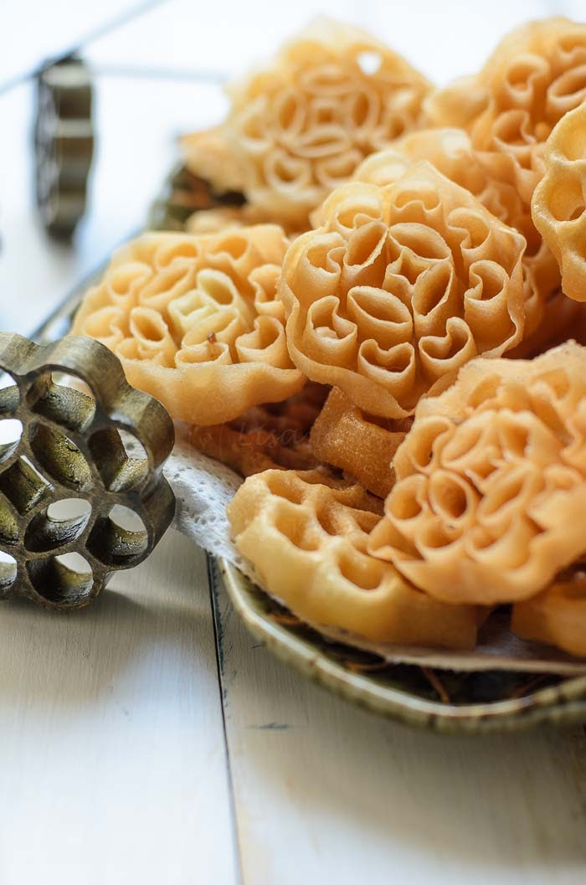
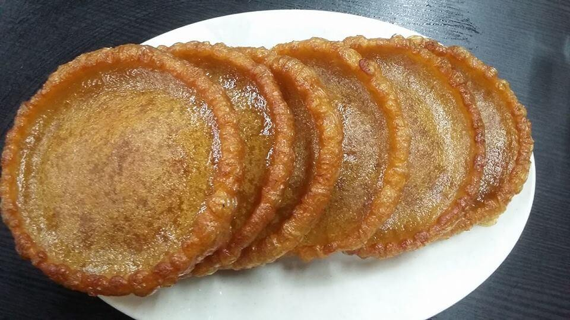

aboutme|
family|
superhero|
futureplans|
ME THE SUPERHERO
Name : Doreena Anak Regang
ID : 20DDT19F2004
My special skillset
- I can cook chinese cuisine and also adept at making traditional iban cakes like "Penyaram" and "Cuan".


What I Wish?
- Making tradional cakes is not an easy things.
- Because, this traditional Iban cake according to the arents because they make this cake according to the fate of their hands
- I hope that the tradition of making traditional cakes continues to progress and will not stop.